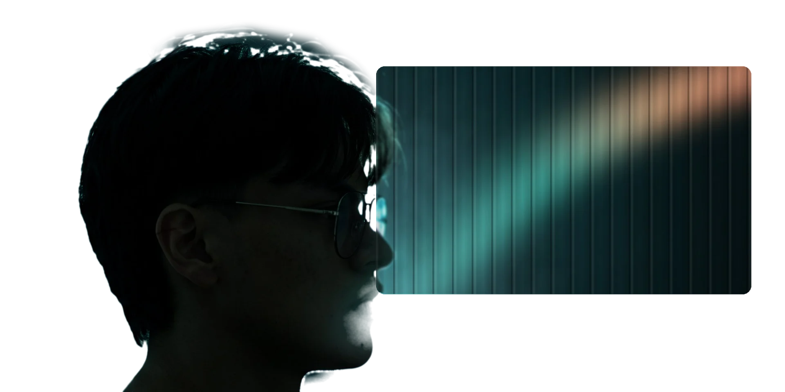

Capítulo 01 · Sobre mí
Me preguntaron qué hacía y no supe responder con un solo oficio. Así que respondo con proyectos: grabo , edito y cuento historias .

Capítulo 02 · Audiovisual
Seis escenas.
Un papel distinto en cada una.
80.000seguidores en 4 mesesAustin Marchese · edición
+40 %en reservasHotel Pinares Plaza · contenido para Meta
Al aireen TelecaféPor encima de la mesa · serie documental
Escenas
Un proyecto, un papel distinto
Capítulo 03 · Gráfico
Diseño gráfico.
Cartas, habladores, marcas y piezas para redes.
Capítulo 04 · Editorial
Publicaciones para hojear.
Revistas, catálogos y libros.
Capítulo 05 · Web
Sitios que se navegan.
Unos los hice de cero; a otros les sumé páginas.
Hechas de cero Pregón de la plaza · Claqueta · Gladys del Campo · Mis Finanzas
Páginas que sumé Audigesco · La Astilla
Capítulo 06 · Próxima escena